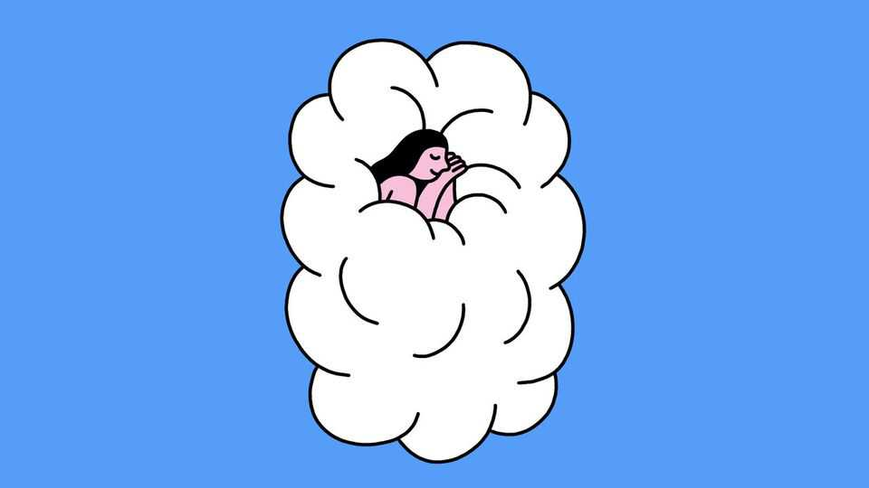

Are weighted blankets really beneficial?
Measurable gains are modest, but many users report feeling better

Oct 1st 2026
ENTHUSIASTS liken sleeping under a weighted blanket to being cocooned, gently hugged or soothed by a light massage. Heavy quilts and sofa throws filled with glass beads or other dense materials have grown popular despite prices that can reach several hundred dollars. Weighted blankets have a curious pedigree: they were inspired in part by padded “squeeze chutes” that restrain and often calm cattle during handling. Might people derive similar measurable benefits from pressure?
In 2023 the results of a small so-called crossover trial (in which participants receive the treatment as well as the control) from a sleep laboratory in Sweden were published. Twenty-six healthy young adults had spent a night under a normal blanket and another beneath one weighing about 12% of their respective body weights. Each night, for an hour before lights-out, saliva samples were taken. Under the weighted blanket, the rise in salivary levels of melatonin, a hormone that promotes sleep, was on average 32% greater.
That sounds promising. These participants, though, did not sleep for longer when under the heavier blanket. And a single night’s trial says little about sustained use. A larger trial, published in BMC Psychiatry in 2024, therefore followed 95 Chinese adults with diagnosed insomnia for a month. Each was randomly assigned a blanket that weighed either 5.5kg or 3.5kg. A device tallied their awakenings during the first week. Those using the heavier blanket woke less often—but only slightly less. At the end of the trial, both groups scored better on a questionnaire measuring insomnia severity, but by statistically indistinguishable amounts. On other questionnaires covering sleep quality and related problems, though, the two groups diverged. Participants using the heavier blanket reported roughly twice the improvement in overall sleep quality, as well as greater reductions in fatigue, anxiety, stress and pain.
Another randomised trial was even more striking. For four weeks, 119 Swedish adults with a combination of insomnia and one of four psychiatric disorders slept under either a 1.5kg blanket containing plastic chains or a 6kg or 8kg one containing metal ones. (Participants were told only that they would receive a blanket containing chains, to preserve some blinding.) Nearly 60% of those given a heavy blanket saw their insomnia-severity score fall by at least half, against 5% in the control group. Those given heavier blankets also reported reductions in fatigue, anxiety and depression. Writing in the Journal of Clinical Sleep Medicine in 2020, the researchers speculated that by mimicking touch and acupressure, a therapy whose practitioners stimulate pressure points with their fingers, the blankets calmed and reassured users while increasing levels of oxytocin, a hormone associated with affectionate touch.
Such conjecture reflects the difficulty of pinning down what weighted blankets actually do. Consider two last studies. In a British crossover trial with 67 autistic children, reported in 2014, a weighted blanket did not help them doze off faster, wake less often or sleep longer. The children and their parents still preferred it. In a trial involving 94 American adults with chronic pain, published in 2022, a heavier blanket did not reduce participants’ daily ratings of pain intensity. Its severity, however, as well as the disruption it posed to daily life, did seem to improve. The most decisive experiment, then, may be to try one. ■
After a free, evidence-based guide to health and wellness? Sign up to our weekly Well Informed newsletter.